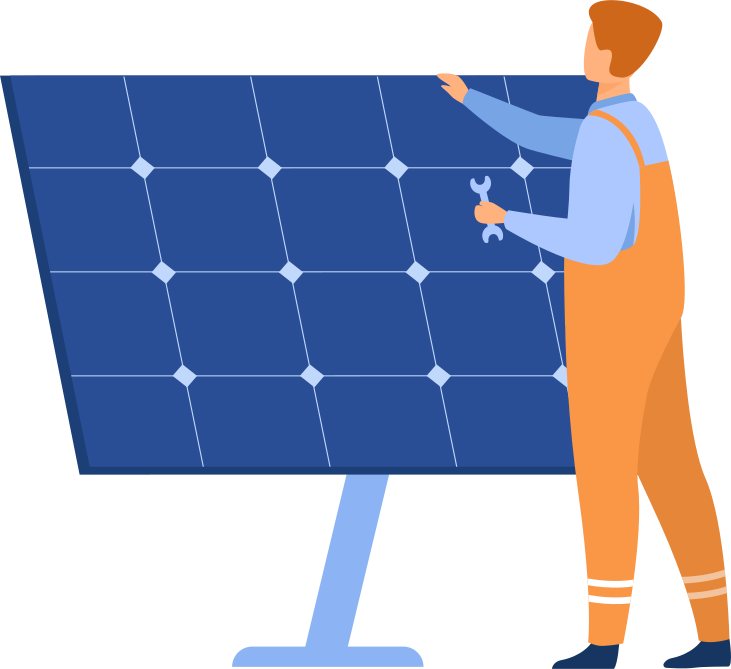

Advanced Analytics For Solar Power Plant
We're assisting in the improvement of solar power plant efficiency, resulting in higher green energy output. We have created a BI dashboard using weather and solar energy data from IoT sensors to deliver near-real-time KPIs and other insights. The key benefit of this system is that it automates a number of previously time-consuming operations.
